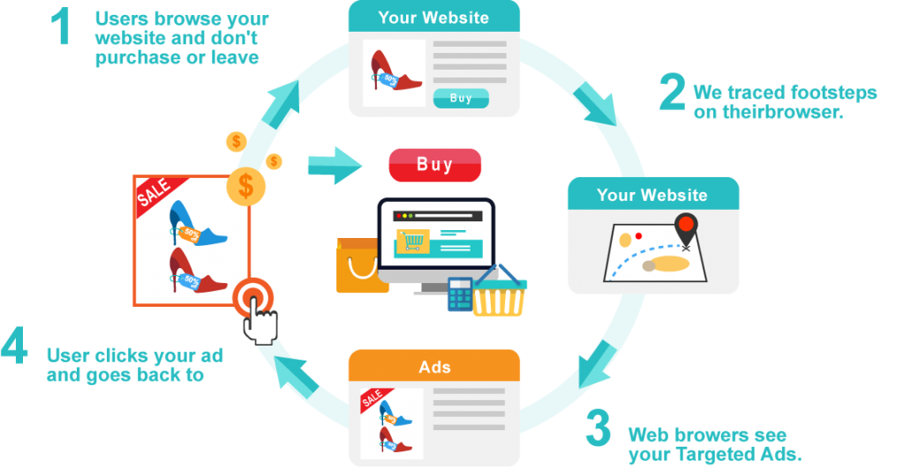

數位廣告基礎入門：再行銷 Retargeting
再行銷（Retargeting）是一種針對曾進入到網站，卻不購買商品的人進行廣告再投放的行銷手法。再行銷的機制就是在網頁上放入一個不影響網站的程式碼，當使用者到訪網站後卻沒買東西就離開時，再行銷技術會在這名使用者的 cookie 上留下一組程式碼，在此之後使用者只要進入到其他的網站，在網站的廣告上投放的都會是使用者之前曾經看過的東西，將使用者重新導回商品頁面完成購買。再行銷技術通常都會被應用在程式化購買的機制裡。

何謂再行銷
再行銷（Retargeting）是一種針對曾進入到網站，卻不購買商品的人進行廣告再投放的行銷手法。再行銷的機制就是在網頁上放入一個不影響網站的程式碼，當使用者到訪網站後卻沒買東西就離開時，再行銷技術會在這名使用者的 cookie 上留下一組程式碼，在此之後使用者只要進入到其他的網站，在網站的廣告上投放的都會是使用者之前曾經看過的東西，將使用者重新導回商品頁面完成購買。再行銷技術通常都會被應用在程式化購買的機制裡。
再行銷的運作原理
再行銷的作用就是「追蹤瀏覽過網站的用戶足跡並重新推廣」。其運作原理如下圖所示：

- 用戶訪問您的網站，但沒有購買商品而離開。
- 網站的追蹤程式碼發揮作用，追蹤到用戶在 Facebook 及 Google 的身份。
- 用戶在 Facebook 上瀏覽、在 Google 搜尋資料或提供 Google 廣告的網站時，用戶會看到與您的產品相關的廣告。
- 用戶點擊廣告，重新訪問您的網站。
- 用戶在您指定的時間內看到您的廣告，直至付款完成。
再行銷技術的應用
再行銷技術可以運用在三個方面：
- 個人化再行銷（Personalized Retargeting）：根據瀏覽頁面的比例來分析訪客興趣，分析訪客購買了什麼，然後對他投放周邊／相關商品廣告
- 商品再行銷（Product Retargeting）：分析訪客瀏覽過的單一商品，例如：玫瑰化妝水，然後投給該訪客其他的「化妝水」廣告。或分析訪客瀏覽過的商品品類，例如：玫瑰化妝水，然後投給該訪客其他的「玫瑰」保養品廣告
- 購物車再行銷（Shopping Cart Retargeting）：分析有放入商品至購物車卻沒有完成結賬的訪客，然後提醒他有喜歡的東西還沒有結賬、商品有新的活動、或投放不同品牌的相同商品。
參考資料
本部落格所有文章除特別聲明外，均採用 CC BY-SA 4.0 協議 ，轉載請註明出處！